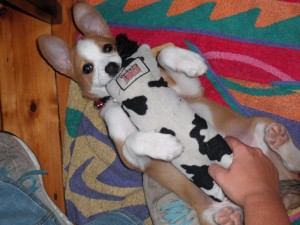
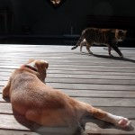
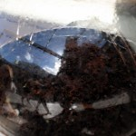
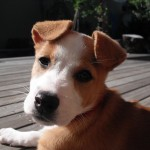
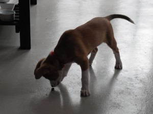
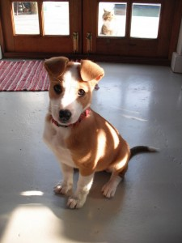
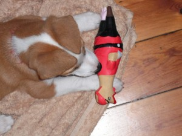

Leash, Crate, her new best mate
Our big challenges / missions at the moment are crate training (going quite well! She only whines for a little while, then settles down very comfortably.), leash training (also going quite well. She doesn’t mind the leash. She does enjoy walkies.  ), and outside training (Umm… She’s very well behaved inside, but the outside is very, very, exciting. She gets distracted. So each day we’re doing some inside training, then some deck training, working up to garden training).
), and outside training (Umm… She’s very well behaved inside, but the outside is very, very, exciting. She gets distracted. So each day we’re doing some inside training, then some deck training, working up to garden training).
We went for a walk in Newlands Forest today. Without Roxy, alas – final injections due next week. Dog walking there is going to be awesome! We already enjoy walking there, but going with a doggy (like just about everyone else there) will be extra awesome.
Pictures!
Re-appropriation of the cat toy know as The Fillet (apologies for Flash, it was very dark):

{kind=link}
Dog, cat, deck interaction | reflected dog, cat, human action | headshot, jaunty angle

{kind=link}
{kind=link}
{kind=link}
Thangs Roxy Lurve #2: Rose Beetles (she loves them, yeah, yeah, yeah).

{kind=link}
Roxy posing while Meep shows her disapproval by frying in the sun:

{kind=link}
And last, but by no means least: the perfect object. No other objects need ever be made again. A rubber chicken (that squawks on squeezing) in a pirate costume (including eyepatch and wooden leg!). ZOMGBBQ! Ahem.

We found it at the Milnerton Flea Market yesterday. Award yourself five bonus points if you guessed that.
{kind=link}
Awwwww she is so adorable – I too have an adorable pup called Rosie (except for the part where she chews everything she can get her teeth into when I am out). She’s very sociable, loves people, dogs, games, toys, listens well and obeys all commands at once – except she can’t explain what made her chew the sofa! Or the fitted carpets. Or the kitchen cupboards……..oh yes I know make sure she has lots of chew toys – she gets two new ones every weekend!
Thank you!
Re chewing: hmm, yes. We’re a bit up and down with Roxy. .
.
Mostly up, though